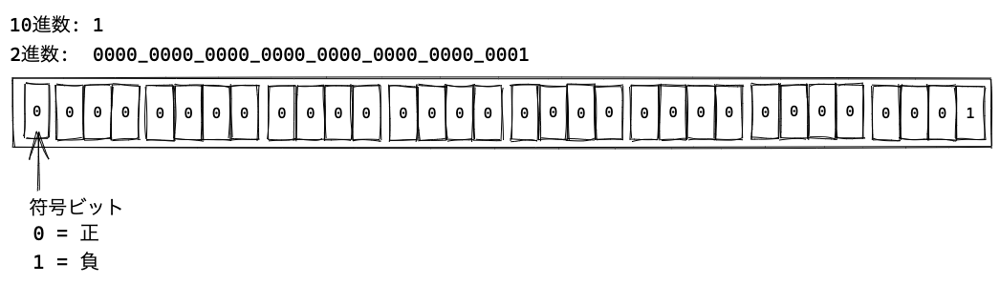
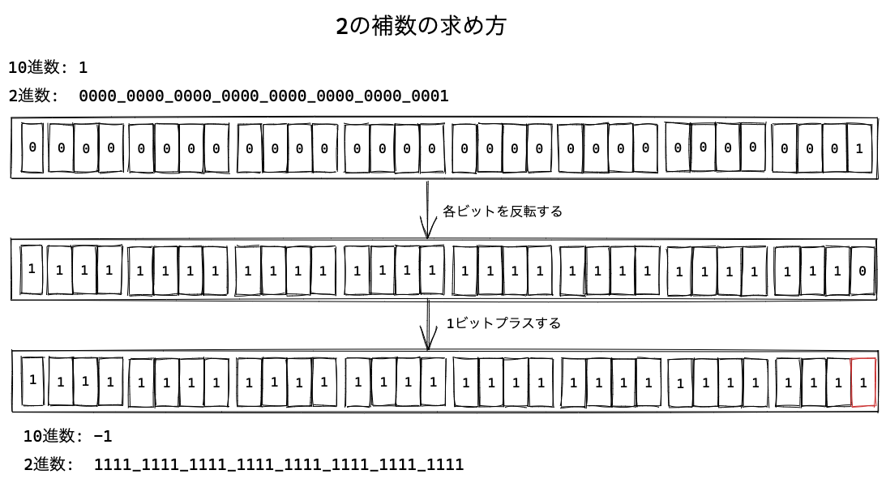

演算子
演算子はよく利用する演算処理を記号などで表現したものです。
たとえば、足し算をする + も演算子の一種です。これ以外にも演算子には多くの種類があります。
演算子は演算する対象を持ちます。この演算子の対象のことを被演算子（オペランド）と呼びます。
次のコードでは、+演算子が値同士を足し算する加算演算を行っています。
このとき、+演算子の対象となっている1と2という2つの値がオペランドです。
1 + 2;
このコードでは+演算子に対して、前後に合計2つのオペランドがあります。
このように、2つのオペランドを取る演算子を二項演算子と呼びます。
// 二項演算子とオペランドの関係
左オペランド 演算子 右オペランド
また、1つの演算子に対して1つのオペランドだけを取るものもあります。
たとえば、数値をインクリメントする++演算子は、次のように前後どちらか一方にオペランドを置きます。
let num = 1;
num++;
// または
++num;
このように、1つのオペランドを取る演算子を単項演算子と呼びます。 単項演算子と二項演算子で同じ記号を使うことがあるため、呼び方を変えています。
この章では、演算子ごとにそれぞれの処理について学んでいきます。 また、演算子の中でも比較演算子は、JavaScriptでも特に挙動が理解しにくい暗黙的な型変換という問題と密接な関係があります。 そのため、演算子をひととおり見た後に、暗黙的な型変換と明示的な型変換について学んでいきます。
演算子の種類は多いため、すべての演算子の動作をここで覚える必要はありません。 必要となったタイミングで、改めてその演算子の動作を見るのがよいでしょう。
二項演算子
四則演算など基本的な二項演算子を見ていきます。
プラス演算子（+）
2つの数値を加算する演算子です。
console.log(1 + 1); // => 2
JavaScriptでは、数値は内部的にIEEE 754方式の浮動小数点数として表現されています （ データ型とリテラルを参照）。 そのため、整数と浮動小数点数の加算もプラス演算子で行えます。
console.log(10 + 0.5); // => 10.5
文字列結合演算子（+）
数値の加算に利用したプラス演算子（+）は、文字列の結合に利用できます。
文字列結合演算子（+）は、2つの文字列を結合した文字列を返します。
const value = "文字列" + "結合";
console.log(value); // => "文字列結合"
つまり、プラス演算子（+）は数値同士と文字列同士の演算をします。
マイナス演算子（-）
2つの数値を減算する演算子です。左オペランドから右オペランドを減算した値を返します。
console.log(1 - 1); // => 0
console.log(10 - 0.5); // => 9.5
乗算演算子（*）
2つの数値を乗算する演算子です。
console.log(2 * 8); // => 16
console.log(10 * 0.5); // => 5
除算演算子（/）
2つの数値を除算する演算子です。左オペランドを右オペランドで除算した値を返します。
console.log(8 / 2); // => 4
console.log(10 / 0.5); // => 20
ただし、任意の数値を0で除算した結果は、無限大を表す数値であるInfinityとなります。
console.log(10 / 0); // => Infinity
剰余演算子（%）
2つの数値を除算したあまりを求める演算子です。左オペランドを右オペランドで除算したあまりを返します。
console.log(8 % 2); // => 0
console.log(9 % 2); // => 1
console.log(10 % 0.5); // => 0
console.log(10 % 4.5); // => 1
[ES2016] べき乗演算子（**）
2つの数値のべき乗を求める演算子です。 左オペランドを右オペランドでべき乗した値を返します。
// べき乗演算子（ES2016）で2の4乗を計算
console.log(2 ** 4); // => 16
べき乗演算子と同じ動作をするMath.powメソッドがあります。
console.log(Math.pow(2, 4)); // => 16
べき乗演算子はES2016で後から追加された演算子であるため、関数と演算子がそれぞれ存在しています。
一方、他の二項演算子は演算子が先に存在していたため、Mathには対応するメソッドがありません。
単項演算子（算術）
単項演算子は、1つのオペランドを受け取り処理する演算子です。
単項プラス演算子（+）
単項演算子の+はオペランドを数値に変換します。
次のコードでは、数値の1を数値へ変換するため、結果は変わらず数値の1です。
+数値のように数値に対して、単項プラス演算子をつけるケースはほぼ無いでしょう。
console.log(+1); // => 1
また、単項プラス演算子は、数値以外も数値へと変換します。 次のコードでは、数字（文字列）を数値へ変換しています。
console.log(+"1"); // => 1
一方、数値に変換できない文字列などはNaNという特殊な値へと変換されます。
// 数値ではない文字列はNaNという値に変換される
console.log(+"文字列"); // => NaN
NaNは"Not-a-Number"の略称で、数値ではないがNumber型の値を表現しています。
NaNはどの値とも（NaN自身に対しても）一致しない特性があり、Number.isNaNメソッドを使うことでNaNの判定を行えます。
// 自分自身とも一致しない
console.log(NaN === NaN); // => false
// Number型である
console.log(typeof NaN); // => "number"
// Number.isNaNでNaNかどうかを判定
console.log(Number.isNaN(NaN)); // => true
しかし、単項プラス演算子は文字列から数値への変換に使うべきではありません。
なぜなら、Numberコンストラクタ関数やparseInt関数などの明示的な変換方法が存在するためです。
詳しくは「暗黙的な型変換」の章で解説します。
単項マイナス演算子（-）
単項マイナス演算子はマイナスの数値を記述する場合に利用します。
たとえば、マイナスの1という数値を -1 と書くことができるのは、単項マイナス演算子を利用しているからです。
console.log(-1); // => -1
また、単項マイナス演算子はマイナスの数値を反転できます。 そのため、"マイナスのマイナスの数値"はプラスの数値となります。
console.log(-(-1)); // => 1
単項マイナス演算子も文字列などを数値へ変換します。
console.log(-"1"); // => -1
また、数値へ変換できない文字列などをオペランドに指定した場合は、NaNという特殊な値になります。
そのため、単項プラス演算子と同じく、文字列から数値への変換に単項マイナス演算子を使うべきではありません。
console.log(-"文字列"); // => NaN
インクリメント演算子（++）
インクリメント演算子（++）は、オペランドの数値を+1する演算子です。
オペランドの前後どちらかにインクリメント演算子を置くことで、オペランドに対して値を+1した値を返します。
let num = 1;
num++;
console.log(num); // => 2
// 次のようにした場合と結果は同じ
// num = num + 1;
インクリメント演算子（++）は、オペランドの前後どちらに置くかによって評価の順番が異なります。
後置インクリメント演算子（num++）は、次のような順で処理が行われます。
numの評価結果を返すnumに対して+1する
そのため、num++が返す値は+1する前の値となります。
let x = 1;
console.log(x++); // => 1
console.log(x); // => 2
一方、前置インクリメント演算子（++num）は、次のような順で処理が行われます。
numに対して+1するnumの評価結果を返す
そのため、++numが返す値は+1した後の値となります。
let x = 1;
console.log(++x); // => 2
console.log(x); // => 2
この2つの使い分けが必要となる場面は多くありません。 そのため、評価の順番が異なることだけを覚えておけば問題ないと言えます。
デクリメント演算子（--）
デクリメント演算子（--）は、オペランドの数値を-1する演算子です。
let num = 1;
num--;
console.log(num); // => 0
// 次のようにした場合と結果は同じ
// num = num - 1;
デクリメント演算子は、インクリメント演算子と同様に、オペランドの前後のどちらかに置くことができます。 デクリメント演算子も、前後どちらに置くかで評価の順番が変わります。
// 後置デクリメント演算子
let x = 1;
console.log(x--); // => 1
console.log(x); // => 0
// 前置デクリメント演算子
let y = 1;
console.log(--y); // => 0
console.log(y); // => 0
比較演算子
比較演算子はオペランド同士の値を比較し、真偽値を返す演算子です。
厳密等価演算子（===）
厳密等価演算子は、左右の2つのオペランドを比較します。
同じ型で同じ値である場合に、trueを返します。
console.log(1 === 1); // => true
console.log(1 === "1"); // => false
また、オペランドがどちらもオブジェクトであるときは、
オブジェクトの参照が同じである場合に、trueを返します。
次のコードでは、空のオブジェクトリテラル({})同士を比較しています。
オブジェクトリテラルは、新しいオブジェクトを作成します。
そのため、異なるオブジェクトを参照する変数を===で比較するとfalseを返します。
// {} は新しいオブジェクトを作成している
const objA = {};
const objB = {};
// 生成されたオブジェクトは異なる参照となる
console.log(objA === objB); // => false
// 同じ参照を比較している場合
console.log(objA === objA); // => true
厳密不等価演算子（!==）
厳密不等価演算子は、左右の2つのオペランドを比較します。
異なる型または異なる値である場合に、trueを返します。
console.log(1 !== 1); // => false
console.log(1 !== "1"); // => true
===を反転した結果を返す演算子となります。
等価演算子（==）
等価演算子（==）は、2つのオペランドを比較します。
同じデータ型のオペランドを比較する場合は、厳密等価演算子（===）と同じ結果になります。
console.log(1 == 1); // => true
console.log("str" == "str"); // => true
console.log("JavaScript" == "ECMAScript"); // => false
// オブジェクトは参照が一致しているならtrueを返す
// {} は新しいオブジェクトを作成している
const objA = {};
const objB = {};
console.log(objA == objB); // => false
console.log(objA == objA); // => true
しかし、等価演算子（==）はオペランド同士が異なる型の値であった場合に、
同じ型となるように暗黙的な型変換をしてから比較します。
そのため、次のような、見た目からは結果を予測できない挙動が多く存在します。
// 文字列を数値に変換してから比較
console.log(1 == "1"); // => true
// "01"を数値にすると`1`となる
console.log(1 == "01"); // => true
// 真偽値を数値に変換してから比較
console.log(0 == false); // => true
// nullの比較はfalseを返す
console.log(0 == null); // => false
// nullとundefinedの比較は常にtrueを返す
console.log(null == undefined); // => true
意図しない挙動となることがあるため、暗黙的な型変換が行われる等価演算子（==）を使うべきではありません。
代わりに、厳密等価演算子（===）を使い、異なる型を比較したい場合は明示的に型を合わせるべきです。
例外的に、等価演算子（==）が使われるケースとして、nullとundefinedの比較があります。
次のように、比較したいオペランドが null または undefined であることを判定したい場合に、
厳密等価演算子（===）では二度比較する必要があります。
等価演算子（==）ではnullとundefinedの比較結果はtrueとなるため、一度の比較でよくなります。
const value = undefined; /* または null */
// === では2つの値と比較しないといけない
if (value === null || value === undefined) {
console.log("valueがnullまたはundefinedである場合の処理");
}
// == では null と比較するだけでよい
if (value == null) {
console.log("valueがnullまたはundefinedである場合の処理");
}
このように等価演算子（==）を使う例外的なケースはありますが、
等価演算子（==）は暗黙的な型変換をするため、バグを引き起こしやすいです。
そのため、仕組みを理解するまでは常に厳密等価演算子（===）を利用することを推奨します。
不等価演算子（!=）
不等価演算子（!=）は、2つのオペランドを比較し、等しくないならtrueを返します。
console.log(1 != 1); // => false
console.log("str" != "str"); // => false
console.log("JavaScript" != "ECMAScript"); // => true
console.log(true != true);// => false
// オブジェクトは参照が一致していないならtrueを返す
const objA = {};
const objB = {};
console.log(objA != objB); // => true
console.log(objA != objA); // => false
不等価演算子も、等価演算子（==）と同様に異なる型のオペランドを比較する際に、暗黙的な型変換をしてから比較します。
console.log(1 != "1"); // => false
console.log(0 != false); // => false
console.log(0 != null); // => true
console.log(null != undefined); // => false
そのため、不等価演算子（!=）は、利用するべきではありません。
代わりに暗黙的な型変換をしない厳密不等価演算子（!==）を利用します。
大なり演算子/より大きい（>）
大なり演算子は、左オペランドが右オペランドより大きいならば、trueを返します。
console.log(42 > 21); // => true
console.log(42 > 42); // => false
大なりイコール演算子/以上（>=）
大なりイコール演算子は、左オペランドが右オペランドより大きいまたは等しいならば、trueを返します。
console.log(42 >= 21); // => true
console.log(42 >= 42); // => true
console.log(42 >= 43); // => false
小なり演算子/より小さい（<）
小なり演算子は、左オペランドが右オペランドより小さいならば、trueを返します。
console.log(21 < 42); // => true
console.log(42 < 42); // => false
小なりイコール演算子/以下（<=）
小なりイコール演算子は、左オペランドが右オペランドより小さいまたは等しいならば、trueを返します。
console.log(21 <= 42); // => true
console.log(42 <= 42); // => true
console.log(43 <= 42); // => false
ビット演算子
ビット演算子では、オペランドである数値を符号付き32ビット整数（0と1からなる32個のビットの集合）として扱います。
たとえば、1という数値は符号付き32ビット整数のビットでは、00000000000000000000000000000001 として表現されます。
わかりやすく4ビットごとに区切ると 0000_0000_0000_0000_0000_0000_0000_0001 のような32ビットの集合となります。
符号付き32ビット整数では、先頭の最上位ビット（一番左のビット）は符号を表し、0の場合は正の値、1の場合は負の値であることを示しています。

符号付き32ビット整数では負の数値は、2の補数形式という形式で表現されます。 2の補数とは、それぞれのビットを反転して1ビットを足した値となります。
たとえば、-1 という数値の符号付き32ビット整数は、次のように2の補数で求められます。
- 10進数の
1は、符号付き32ビット整数では0000_0000_0000_0000_0000_0000_0000_0001となる 0000_0000_0000_0000_0000_0000_0000_0001の各ビットを反転すると1111_1111_1111_1111_1111_1111_1111_1110となる- これに1ビットを足すと
1111_1111_1111_1111_1111_1111_1111_1111となる
これによって、-1の符号付き32ビット整数は 1111_1111_1111_1111_1111_1111_1111_1111 となります。

符号付き32ビット整数で表現できる数値の範囲は、1000_0000_0000_0000_0000_0000_0000_0000から0111_1111_1111_1111_1111_1111_1111_1111までとなります。
10進数に直すと-(2^31)（2の31乗の負の数）から (2^31) - 1（2の31乗から1引いた数）までとなります。
32ビットを超える数値については、32ビットをはみ出るビットが最上位（一番左）から順番に捨てられます。
これから見ていくビット演算子はオペランドを符号付き32ビット整数として扱い、その演算結果を10進数の数値として返します。
ビット論理積（&）
ビット論理積演算子（&）はビットごとのAND演算した結果を返します。
AND演算では、オペランドの各ビットがどちらも1の場合は1となり、それ以外の場合は0となります。
次のコードでは、10進数の15と9をAND演算しています。
15は、符号付き32ビット整数では0000_0000_0000_0000_0000_0000_0000_1111となります。
9は、符号付き32ビット整数では0000_0000_0000_0000_0000_0000_0000_1001となります。
これらをAND演算した結果は0000_0000_0000_0000_0000_0000_0000_1001となり、10進数の値である9を返します。
console.log(15 & 9); // => 9
// 同じ位の各ビット同士をAND演算する（上位の`0`は省略）
// 1111
// 1001
// ----
// 1001
console.log(0b1111 & 0b1001); // => 0b1001
ビット論理和（|）
ビット論理和演算子（|）はビットごとのOR演算した結果を返します。
OR演算では、オペランドの各ビットがどちらか片方でも1の場合は1となり、両方とも0の場合は0となります。
console.log(15 | 9); // => 15
// 同じ位の各ビット同士をOR演算する（上位の`0`は省略）
// 1111
// 1001
// ----
// 1111
console.log(0b1111 | 0b1001); // => 0b1111
ビット排他的論理和（^）
ビット排他的論理和演算子（^）はビットごとのXOR演算した結果を返します。
XOR演算では、オペランドのビットが異なるなら1、両方とも同じなら0となります。
console.log(15 ^ 9); // => 6
// 同じ位の各ビット同士をXOR演算する（上位の`0`は省略）
// 1111
// 1001
// ----
// 0110
console.log(0b1111 ^ 0b1001); // => 0b0110
ビット否定（~）
単項演算子の否定演算子（~）はオペランドの各ビットを反転した値を返します。
これは1の補数として知られている値と同じものです。
次のコードでは、10進数で15を否定演算子（~）で各ビットを反転させた値を得ています。
15 は 0000_0000_0000_0000_0000_0000_0000_1111です。
各ビットを反転させると1111_1111_1111_1111_1111_1111_1111_0000 となり、10進数では-16 となります。
console.log(~15); // => -16
~xのようにxをビット否定演算子で演算した結果は、-(x + 1)となります。
この性質を利用する形で、ビット否定演算子（~）はビット演算以外でも使われていることがあります。
文字列（Stringオブジェクト）が持つindexOfメソッドは、マッチする文字列を見つけて、そのインデックス（位置）を返すメソッドです。
このindexOfメソッドは、検索対象が見つからない場合には-1を返します。
const str = "森森本森森";
// 見つかった場合はインデックスを返す
// JavaScriptのインデックスは0から開始するので2を返す
console.log(str.indexOf("本")); // => 2
// 見つからない場合は-1を返す
console.log(str.indexOf("火")); // => -1
否定演算子（~）は1の補数を返すため、~(-1)は0となります。
console.log(~0); // => -1
console.log(~(-1)); // => 0
JavaScriptでは0も、if文ではfalseとして扱われます。
そのため、~indexOfの結果が0となるのは、その文字列が見つからなかった場合だけとなります。
次のコードのように否定演算子（~）とindexOfメソッドを使ったイディオムが一部では使われていました。
const str = "森森木森森";
// indexOfメソッドは見つからなかった場合は -1 を返す
if (str.indexOf("木") !== -1) {
console.log("木を見つけました");
}
// 否定演算子（`~`）で同じ動作を実装
// (~(-1)) は 0 となるため、見つからなかった場合はif文の中身は実行されない
if (~str.indexOf("木")) {
console.log("木を見つけました");
}
ES2015では、文字列（Stringオブジェクト）にincludesメソッドが実装されました。
includesメソッドは指定した文字列が含まれているかを真偽値で返します。
const str = "森森木森森";
if (str.includes("木")) {
console.log("木を見つけました");
}
そのため、否定演算子（~）とindexOfメソッドを使ったイディオムは、includesメソッドに置き換えられます。
左シフト演算子（<<）
左シフト演算子は、数値であるnumをbitの数だけ左へシフトします。
左にあふれたビットは破棄され、0のビットを右から詰めます。
num << bit;
次のコードでは、9を2ビット分だけ左へシフトしています。
console.log( 9 << 2); // => 36
console.log(0b1001 << 2); // => 0b10_0100
右シフト演算子（>>）
右シフト演算子は、数値であるnumをbitの数だけ右へシフトします。
右にあふれたビットは破棄され、左端のビットのコピーを左から詰めます。
num >> bit;
次のコードでは、-9を2ビット分だけ右へシフトしています。
左端のビットのコピーを使うため、常に符号は維持されます。
console.log((-9) >> 2); // => -3
// 1111_1111_1111_1111_1111_1111_1111_0111 >> 2
// => 1111_1111_1111_1111_1111_1111_1111_1101
ゼロ埋め右シフト演算子（>>>）
ゼロ埋め右シフト演算子は、数値であるnumをbitの数だけ右へシフトするのは右シフト演算子（>>）と同じです。
異なる点としては右にあふれたビットは破棄され、0のビットを左から詰めます。
次のコードでは、-9を2ビット分だけゼロ埋め右シフトしています。
左端のビットは0となるため、常に正の値となります。
console.log((-9) >>> 2); // => 1073741821
// 1111_1111_1111_1111_1111_1111_1111_0111 >>> 2
// => 0011_1111_1111_1111_1111_1111_1111_1101
代入演算子（=）
代入演算子（=）は変数に対して値を代入します。
代入演算子については「変数と宣言」の章も参照してください。
let x = 1;
x = 42;
console.log(x); // => 42
また、代入演算子は二項演算子と組み合わせて利用できます。
+=、-=、*=、/=、%=、<<=、>>=、>>>=、&=、^=、|=、**=のように、演算した結果を代入できます。
let num = 1;
num += 10; // num = num + 10; と同じ
console.log(num); // => 11
[ES2015] 分割代入（Destructuring assignment）
今まで見てきた代入演算子は1つの変数に値を代入するものでした。 分割代入を使うことで、配列やオブジェクトの値を複数の変数へ同時に代入できます。 分割代入は短縮記法のひとつでES2015から導入された構文です。
分割代入は、代入演算子（=）を使うのは同じですが、左辺のオペランドが配列リテラルやオブジェクトリテラルとなります。
次のコードでは、右辺の配列の値を、左辺の配列リテラルの対応するインデックスに書かれた変数名へ代入します。
const array = [1, 2];
// aには`array`の0番目の値、bには1番目の値が代入される
const [a, b] = array;
console.log(a); // => 1
console.log(b); // => 2
これは、次のように書いたのと同じ結果になります。
const array = [1, 2];
const a = array[0];
const b = array[1];
同様にオブジェクトも分割代入に対応しています。 オブジェクトの場合は、右辺のオブジェクトのプロパティ値を、左辺に対応するプロパティ名へ代入します。
const obj = {
"key": "value"
};
// プロパティ名`key`の値を、変数`key`として定義する
const { key } = obj;
console.log(key); // => "value"
これは、次のように書いたのと同じ結果になります。
const obj = {
"key": "value"
};
const key = obj.key;
論理演算子
論理演算子は基本的に真偽値を扱う演算子でAND（かつ）、OR（または）、NOT（否定）を表現できます。
AND演算子（&&）
AND演算子（&&）は、左辺の値の評価結果がtrueならば、右辺の評価結果を返します。
一方で、左辺の値の評価結果がfalseならば、そのまま左辺の値を返します。
// 左辺はtrueであるため、右辺の評価結果を返す
console.log(true && "右辺の値"); // => "右辺の値"
// 左辺がfalseであるなら、その時点でfalseを返す
// 右辺は評価されない
console.log(false && "右辺の値"); // => false
AND演算子（&&）は、左辺の評価がfalseの場合、オペランドの右辺は評価されません。
次のように、左辺がfalseの場合は、右辺に書いたconsole.log関数自体が実行されません。
// 左辺がtrueなので、右辺は評価される
true && console.log("このコンソールログは実行されます");
// 左辺がfalseなので、右辺は評価されない
false && console.log("このコンソールログは実行されません");
このような値が決まった時点でそれ以上評価しないことを短絡評価と呼びます。
また、AND演算子は左辺を評価する際に、左辺を真偽値へと暗黙的な型変換をしてから判定します。
真偽値への暗黙的な型変換では、次に挙げる値はfalseへ変換されます。
falseundefinednull00nNaN""（空文字列）
暗黙的な型変換によってfalseに変換されるこれらの値をまとめてfalsyな値と呼びます。
falsyではない値は、trueへと変換されます。
trueへと変換される値の種類は多いため、falseへと変換されない値はtrueとなることは覚えておくとよいです。
このオペランドを真偽値に変換してから評価するのはAND、OR、NOT演算子で共通の動作です。
次のように、AND演算子（&&）は左辺を真偽値へと変換した結果がtrueの場合に、右辺の評価結果を返します。
つまり、左辺がfalsyの場合は、右辺は評価されません。
// 左辺はfalsyではないため、評価結果として右辺を返す
console.log("文字列" && "右辺の値"); // => "右辺の値"
console.log(42 && "右辺の値"); // => "右辺の値"
// 左辺がfalsyであるため、評価結果として左辺を返す
console.log("" && "右辺の値"); // => ""
console.log(0 && "右辺の値"); // => 0
console.log(null && "右辺の値"); // => null
AND演算子は、if文と組み合わせて利用することが多い演算子です。
次のように、valueがString型で かつ 値が"str"である場合という条件をひとつの式として書くことができます。
const value = "str";
if (typeof value === "string" && value === "str") {
console.log(`${value} is string value`);
}
// if文のネストで書いた場合と結果は同じとなる
if (typeof value === "string") {
if (value === "str") {
console.log(`${value} is string value`);
}
}
このときに、valueがString型でない場合は、その時点でif文の条件式はfalseとなります。
そのため、valueがString型ではない場合は、AND演算子（&&）の右辺は評価されずに、if文の中身も実行されません。
AND演算子（&&）を使うと、if文のネストに比べて短く書くことができます。
しかし、if文が3重4重にネストしているのは複雑なのと同様に、 AND演算子やOR演算子が3つ4つ連続すると複雑で読みにくいコードとなります。 その場合は抽象化ができないかを検討するべきサインとなります。
OR演算子（||）
OR演算子（||）は、左辺の値の評価結果がtrueならば、そのまま左辺の値を返します。
一方で、左辺の値の評価結果がfalseであるならば、右辺の評価結果を返します。
// 左辺がtrueなので、左辺の値が返される
console.log(true || "右辺の値"); // => true
// 左辺がfalseなので、右辺の値が返される
console.log(false || "右辺の値"); // => "右辺の値"
OR演算子（||）は、左辺の評価がtrueの場合、オペランドの右辺を評価しません。
これは、AND演算子（&&）と同様の短絡評価となるためです。
// 左辺がtrueなので、右辺は評価されない
true || console.log("このコンソールログは実行されません");
// 左辺がfalseなので、右辺は評価される
false || console.log("このコンソールログは実行されます");
また、OR演算子は左辺を評価する際に、左辺を真偽値へと暗黙的な型変換をします。 次のように、OR演算子は左辺がfalsyの場合には右辺の値を返します。
// 左辺がfalsyなので、右辺の値が返される
console.log(0 || "左辺はfalsy"); // => "左辺はfalsy"
console.log("" || "左辺はfalsy"); // => "左辺はfalsy"
console.log(null || "左辺はfalsy"); // => "左辺はfalsy"
// 左辺はfalsyではないため、左辺の値が返される
console.log(42 || "右辺の値"); // => 42
console.log("文字列" || "右辺の値"); // => "文字列"
OR演算子は、if文と組み合わせて利用することが多い演算子です。
次のように、valueが0または1の場合にif文の中身が実行されます。
const value = 1;
if (value === 0 || value === 1) {
console.log("valueは0または1です。");
}
NOT演算子（!）
NOT演算子（!）は、オペランドの評価結果がtrueならば、falseを返します。
一方で、オペランドの評価結果がfalseならば、trueを返します。
つまり、オペランドの評価結果を反転した真偽値を返します。
console.log(!false); // => true
console.log(!true); // => false
NOT演算子（!）もAND演算子（&&）とOR演算子（||）と同様に真偽値へと暗黙的な型変換します。
falsyである値はtrueへ変換され、falsyではない値はfalseへと変換されます。
// falsyな値は`true`となる
console.log(!0); // => true
console.log(!""); // => true
console.log(!null); // => true
// falsyではない値は`false`となる
console.log(!42); // => false
console.log(!"文字列"); // => false
NOT演算子は必ず真偽値を返すため、次のように2つNOT演算子を重ねて真偽値へ変換するという使い方も見かけます。
たとえば、!!falsyな値のように2度反転すればfalseになります。
const str = "";
// 空文字列はfalsyであるため、true -> falseへと変換される
console.log(!!str); // => false
このようなケースの多くは、比較演算子を使うなどより明示的な方法で、真偽値を得ることができます。
安易に!!による変換に頼るよりは別の方法を探してみるのがいいでしょう。
const str = "";
// 空文字列(長さが0より大きな文字列)でないことを判定
console.log(str.length > 0); // => false
[ES2020] Nullish coalescing演算子(??)
Nullish coalescing演算子(??)は、左辺の値がnullishであるならば、右辺の評価結果を返します。
nullishとは、評価結果がnullまたはundefinedとなる値のことです。
// 左辺がnullishであるため、右辺の値の評価結果を返す
console.log(null ?? "右辺の値"); // => "右辺の値"
console.log(undefined ?? "右辺の値"); // => "右辺の値"
// 左辺がnullishではないため、左辺の値の評価結果を返す
console.log(true ?? "右辺の値"); // => true
console.log(false ?? "右辺の値"); // => false
console.log(0 ?? "右辺の値"); // => 0
console.log("文字列" ?? "右辺の値"); // => "文字列"
Nullish coalescing演算子(??)とOR演算子（||）は、値のデフォルト値を指定する場合によく利用されています。
OR演算子（||）は左辺がfalsyの場合に右辺を評価するため、意図しない結果となる場合があります。
次のコードは、inputValueが未定義だった場合に、valueに対するデフォルト値をOR演算子（||）で指定しています。
inputValueが未定義(undefined)の場合は、意図したようにOR演算子（||）の右辺で指定した42が入ります。
しかし、inputValueが0という値であった場合は、0はfalsyであるためvalueには右辺の42が入ります。
これでは0という値が扱えないため、意図しない動作となっています。
const inputValue = 任意の値または未定義;
// `inputValue`がfalsyの場合は、`value`には`42`が入る
// `inputValue`が`0`の場合は、`value`に`42`が入ってしまう
const value = inputValue || 42;
console.log(value);
この問題を解決するためにES2020でNullish coalescing演算子(??)が導入されています。
Nullish coalescing演算子(??)では、左辺がnullishの場合のみ、valueに右辺で指定した42が入ります。
そのため、inputValueが0という値が入った場合は、valueにはそのままinputValueの値である0が入ります。
const inputValue = 任意の値または未定義;
// `inputValue`がnullishの場合は、`value`には42が入る
// `inputValue`が`0`の場合は、`value`に`0`が入る
const value = inputValue ?? 42;
console.log(value);
条件（三項）演算子（?と:）
条件演算子（?と:）は三項をとる演算子であるため、三項演算子とも呼ばれます。
条件演算子は条件式を評価した結果がtrueならば、Trueのとき処理する式の評価結果を返します。
条件式がfalseである場合は、Falseのとき処理する式の評価結果を返します。
条件式 ? Trueのとき処理する式 : Falseのとき処理する式;
if文との違いは、条件演算子は式として書くことができるため値を返すという点です。
たとえば、次のように条件式の評価結果により"A" または "B" どちらかを返します。
const valueA = true ? "A" : "B";
console.log(valueA); // => "A"
const valueB = false ? "A" : "B";
console.log(valueB); // => "B"
条件分岐による値を返せるため、条件によって変数の初期値が違う場合などに使われます。
次の例では、text文字列にprefixとなる文字列を先頭につける関数を書いています。
第二引数のprefixを省略したり文字列ではないものが指定された場合に、デフォルトのprefixを使います。
第二引数が省略された場合には、prefixにundefinedが入ります。
条件演算子の評価結果は値を返すので、constを使って宣言と同時に代入できます。
function addPrefix(text, prefix) {
// `prefix`が指定されていない場合は"デフォルト:"を付ける
const pre = typeof prefix === "string" ? prefix : "デフォルト:";
return pre + text;
}
console.log(addPrefix("文字列")); // => "デフォルト:文字列"
console.log(addPrefix("文字列", "カスタム:")); // => "カスタム:文字列"
if文を使った場合は、宣言と代入を分ける必要があるため、constを使うことができません。
function addPrefix(text, prefix) {
let pre = "デフォルト:";
if (typeof prefix === "string") {
pre = prefix;
}
return pre + text;
}
console.log(addPrefix("文字列")); // => "デフォルト:文字列"
console.log(addPrefix("文字列", "カスタム:")); // => "カスタム:文字列"
グループ化演算子（(と)）
グループ化演算子は複数の二項演算子が組み合わさった場合に、演算子の優先順位を明示できる演算子です。
たとえば、次のようにグループ化演算子で囲んだ部分が最初に処理されるため、結果も変化します。
const a = 1;
const b = 2;
const c = 3;
console.log(a + b * c); // => 7
console.log((a + b) * c); // => 9
演算子の優先順位はECMAScript仕様で定義されていますが、演算子の優先度をすべて覚えるのは難しいです。 演算子の優先順位の中でもグループ化演算子は優先順位が高く、グループ化演算子を使うことによって優先順位を明示できます。
次のようなグループ化演算子を使わずに書いたコードを見てみましょう。
xがtrueまたは、yかつzがtrueであるときに処理されます。
if (x || y && z) {
// x が true または
// y かつ z が true
}
ひとつの式に複数の種類の演算子が出てくると読みにくくなる傾向があります。 このような場合にはグループ化演算子を使い、結合順を明示して書くようにしましょう。
if (x || (y && z)) {
// x が true または
// y かつ z が true
}
しかし、ひとつの式で多数の演算をするよりも、式自体を分けたほうが読みやすい場合もあります。
次のようにaとbが文字列型 または xとyが数値型の場合に処理するif文を考えてみます。
グループ化演算子を使い、そのまま1つの条件式で書くことも可能ですが、読みにくくなってしまいます。
if ((typeof a === "string" && typeof b === "string") || (typeof x === "number" && typeof y === "number")) {
// `a`と`b`が文字列型 または
// `x`と`y`が数値型
}
このように無理して1つの式（1行）で書くよりも、条件式を分解してそれぞれの結果を変数として定義したほうが読みやすくなる場合もあります。
const isAbString = typeof a === "string" && typeof b === "string";
const isXyNumber = typeof x === "number" && typeof y === "number";
if (isAbString || isXyNumber) {
// `a`と`b`が文字列型 または
// `x`と`y`が数値型
}
そのため、グループ化演算子ですべての条件をまとめるのではなく、 それぞれの条件を分解して名前をつける（変数として定義する）ことも重要です。
カンマ演算子（,）
カンマ演算子（,）は、カンマ（,）で区切った式を左から順に評価し、
最後の式の評価結果を返します。
次の例では、式1、式2、式3の順に評価され、式3の評価結果を返します。
式1, 式2, 式3;
これまでに、カンマで区切るという表現は、constによる変数宣言などでも出てきました。
左から順に実行する点ではカンマ演算子の挙動は同じものですが、構文としては似て非なるものです。
const a = 1, b = 2, c = a + b;
console.log(c); // => 3
一般にカンマ演算子を利用する機会はほとんどないため、「カンマで区切った式は左から順に評価される」ということだけを知っていれば問題ありません。1
まとめ
この章では演算子について学びました。
- 演算子はよく利用する演算処理を記号などで表現したもの
- 四則演算や論理演算などさまざまな種類の演算子がある
- 演算子には優先順位が定義されており、グループ化演算子で明示できる
1. カンマ演算子を活用したテクニックとしてindirect callというものがあります。https://2ality.com/2014/01/eval.html ↩